Platforms
Moving Platforms before Entropy
The platforms had an intressting dev time line. See they were made orignally in a proprietary game engine from PSQ. Back when Entropy was a 2 week "get used to this engine" project.
This engine was bare bones and I can not show any code from it becouse NDA but I will still explain everything I can that was within it while not violation said NDA.
The engine had no splines but had *nodes*, *tags* and *dispaly names*.
So with the help of Kjell Hopkins we ended up figuring out the platfrom sytem.
This was also where we relized the mathmatical problem with lerping over a distance using the same speed, also know as the mathimatical problem.
The Mathimatical problem
Say we have 2 boxes [A] and [B], they are both lerping over a distance. Box [A] has the distance of 10m while box [B] has a distance of 20m.
Lerping from start to end on both boxes with the same speed will have this effect: when lerp is 0.5 (50%) done [B] will be 10m and [A] will be ... 5m.
Even thougth they are lerping at the same speed they are travling a differnt distance 50% of 20m is 10m and 50% of 10m is 5m.
So we needed to fix this cus otherwise diffrent platfroms would have differnt speed which wouldnt feel great.
How did we do this? Well *math* of course.
This line of code here is what is handling time for the platfroms. Let me break it down for you.
"m_time" is the current time of this platform.
"time_flow" is either 1, -1 depending on if the platform is "active", active means that the player has told it to start moving.
1 means for it to go forward in the lerp, start -> end. -1 means going backwards in the lerp, end -> start.
"m_point_travel_time" is the time it takes for the platform to travel, in effet is speed
"diff" is just the length difference between the points its traveling between
This looks werid but we do this becouse the engine we worked in doesnt clamp _delta_time by defult so tabing in and out would get you a ridiculous number, so we compensate for it by clamping the _delta_time value.
Then we multiply this by both the speed and the time flow of the platfrom. This gets us out a time value that compensates for diraction of travel and framerate.
After we done the time value but before we add it to our previus time we divide this value by the diff to acount for the space between the points.
We add all of this onto the time, incrmently increasting it towards 1 or 0 deppending on time_flow.
Lastly we clamp the value to make sure that we do not go above 1 or bellow 0.
This is how we get a time for the lerp that will be moving at the same speed nomatter the distance it has to travel.
The Feature Problem
As I said before the engine we used for this didnt have splines but we manged to come up with a creative soultion.
First we search all the nodes in the scene if they have the tag "is_point". If the node has his tag we set it to hidden and add it to an array of points.
We sort this array using the points name, the points are named from 0 -> X, X being how every many points there were.
Lasty we get all the points that have a tag that is the same as this platfroms name. Stroing their world positions in positions, the platfrom will then use this vector of positions to figure out where to travel to.
This was how we got around the lack of splines.
I cant give acces to the full project but I was allowed to share these filles, edited to not hit NDA but still
This engine was bare bones and I can not show any code from it becouse NDA but I will still explain everything I can that was within it while not violation said NDA.
The engine had no splines but had *nodes*, *tags* and *dispaly names*.
So with the help of Kjell Hopkins we ended up figuring out the platfrom sytem.
This was also where we relized the mathmatical problem with lerping over a distance using the same speed, also know as the mathimatical problem.
The Mathimatical problem
Say we have 2 boxes [A] and [B], they are both lerping over a distance. Box [A] has the distance of 10m while box [B] has a distance of 20m.
Lerping from start to end on both boxes with the same speed will have this effect: when lerp is 0.5 (50%) done [B] will be 10m and [A] will be ... 5m.
Even thougth they are lerping at the same speed they are travling a differnt distance 50% of 20m is 10m and 50% of 10m is 5m.
So we needed to fix this cus otherwise diffrent platfroms would have differnt speed which wouldnt feel great.
How did we do this? Well *math* of course.
platform.m_time = std::clamp(platform.m_time += (std::clamp(_delta_time, 0.0f, 1.0f) * time_flow * platform.m_point_travel_time) / platform.diff, 0.0f, 1.0f);
"m_time" is the current time of this platform.
"time_flow" is either 1, -1 depending on if the platform is "active", active means that the player has told it to start moving.
1 means for it to go forward in the lerp, start -> end. -1 means going backwards in the lerp, end -> start.
"m_point_travel_time" is the time it takes for the platform to travel, in effet is speed
"diff" is just the length difference between the points its traveling between
(std::clamp(_delta_time, 0.0f, 1.0f) * time_flow * platform.m_point_travel_time)
Then we multiply this by both the speed and the time flow of the platfrom. This gets us out a time value that compensates for diraction of travel and framerate.
std::clamp( platform.m_time += (*Previus Code*) / platform.diff, 0.0f, 1.0f);
We add all of this onto the time, incrmently increasting it towards 1 or 0 deppending on time_flow.
Lastly we clamp the value to make sure that we do not go above 1 or bellow 0.
This is how we get a time for the lerp that will be moving at the same speed nomatter the distance it has to travel.
The Feature Problem
As I said before the engine we used for this didnt have splines but we manged to come up with a creative soultion.
auto searchForPlatformsPoints = [](const std::shared_ptr _node) {
if (_node->hasTag("is_point"))
{
_node->setHidden(true);
return true;
}
return false;
};
auto points = _scene.lock()->searchAllNodes(searchForPlatformsPoints);
We sort this array using the points name, the points are named from 0 -> X, X being how every many points there were.
for (auto& point : points)
{
if (point->hasTag(getName()))
{
auto pos = point->getWorldPosition();
positions.push_back(pos);
}
}
This was how we got around the lack of splines.
I cant give acces to the full project but I was allowed to share these filles, edited to not hit NDA but still
Moving Platforms In Entropy
Lets start with going over what remains from the old system so we can then see how much this grew when I had 9 weeks to work on it.
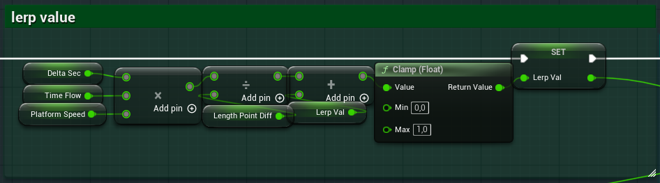
Now for something new that I added to the platform.
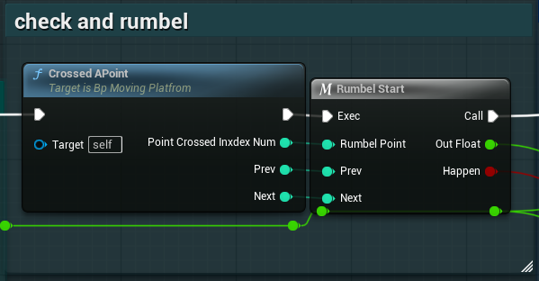
It looks like this in game but heres how it looks in the code starting with "Crossed A Point".
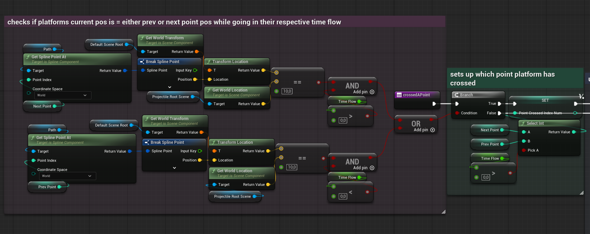
Both the top path and the bottom path do the same thing just in different time flow directions. If this platfrom has corssed this point in world return true.
After this we used the time flow to pick either next point or prev point.
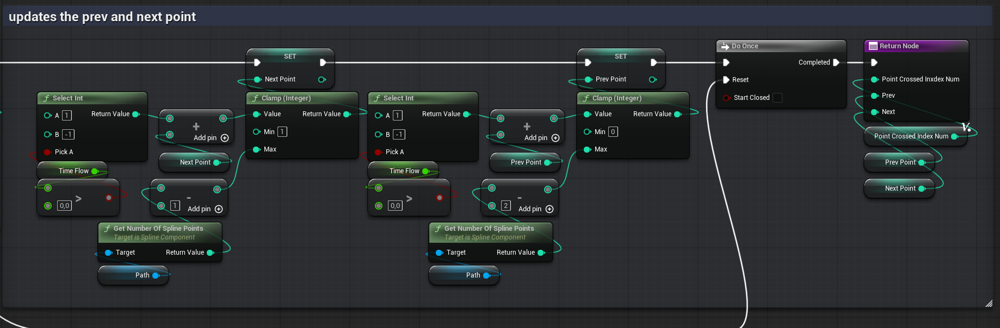
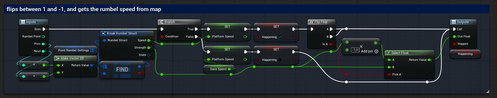
This gives us the shaking effect. We push out strength and the bool and it goes into RotSecltion.
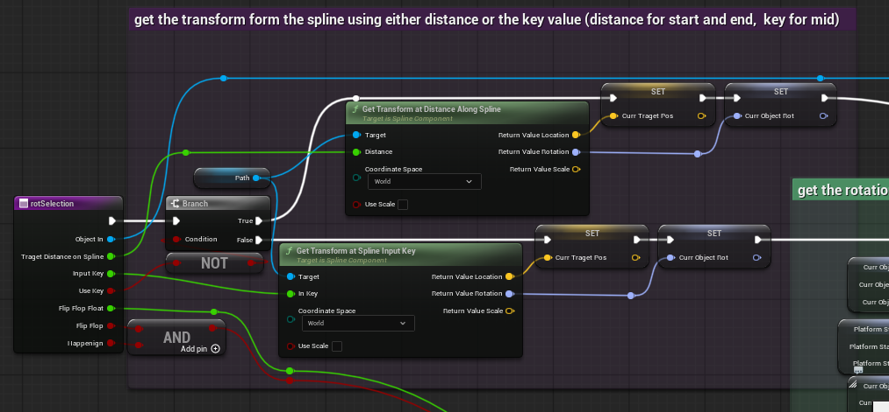
For the rumbel effect we care about 4 veriables target distnace on spline or TDOS, Flip flop float, Flip flop (bool) and Happenign missed spelt happening.
We use the TDOS value to get the transfrom at that point in the spline, spliting it and only saving the position and rotation for later.
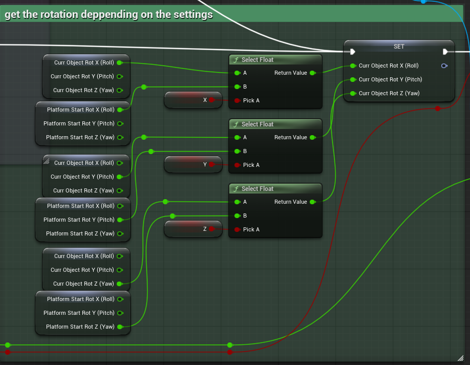
Side note; Spline rotation works on a 180° half circle slice. So if the spline turns in a C pattern then in the middle of that C pattern it would snap fliping in 180° in an instant.
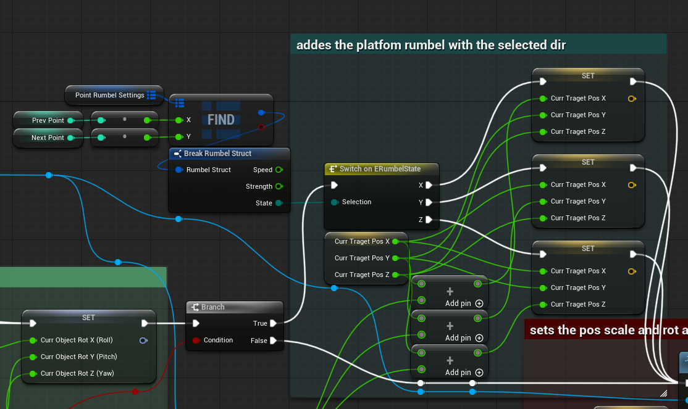
We look between the points we currently are to get the rumbel struct. We take out the enum which repricents the 3 diractions and depending on if we rumbel on the x, y or z we take that postion and add Flip flop float to it. This gets us the shaking motion that we want.
Of course this targets a visual only part of the platform and not the thing you are acutally standing on as to not shake the player as well.
We apply all of this, rotation and postion, to the platfrom to get it to actually move and rotate along the spline.
Now then let me show you how we call this platform to start moving.
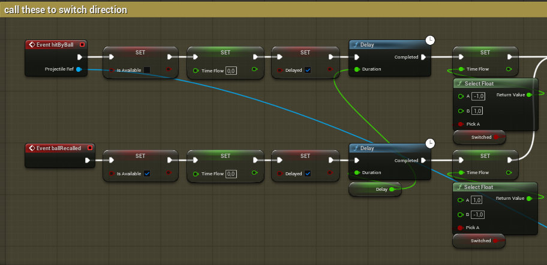
We set time flow and flip another bool to say we are delaying the platform then we delay it. We do this so get the platfrom to stand still for a secound when activated or deactivated.
After the delay set the time flow so it can start moving again. The "Switched" bool controls swtiching the start and end of the platfrom. So if it active then the time flow has to be in reverse.
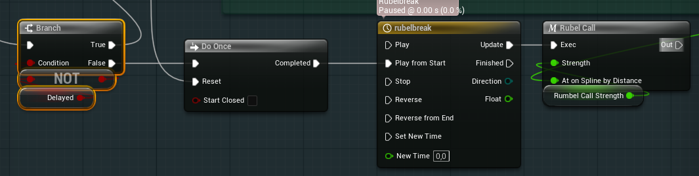
Now onto debug, well my custom debug tool-thingy.
The debug tool is devided into 4 sections, Creating start cube, creating mid cubes, creating end cubes and destroying cubes.
Lets begin with the start and end cube as they are basically the same
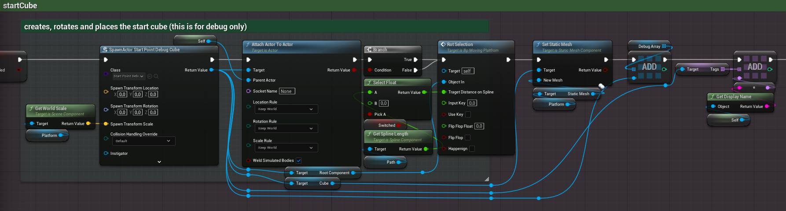
We then attach this actor onto the platfrom, after that we set its postion and rotation using the Rot Selection function.
Then we change out the staic mesh to be the platfroms mesh and add it to an array of debug actors
This line should be memerabel we tag the the debug actor with the display name of the platform, simular to how old entropy did it
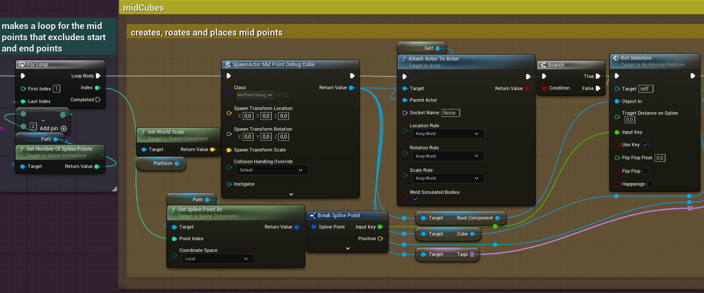
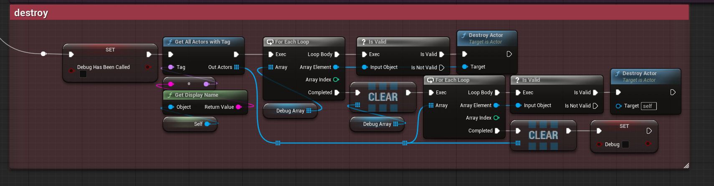
This is kinda it for the moving platfroms.
Freezing Platforms In Entropy
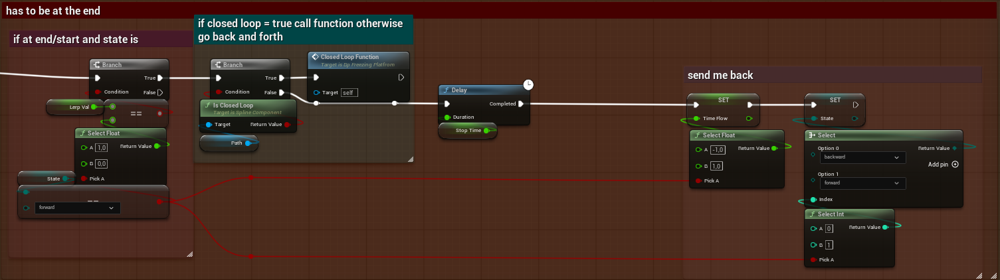
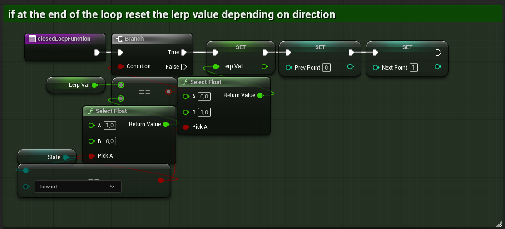
Vine Generator
This was my attempt to make a vine generator for fun basically. We ran low on work so when I was bored and had some free time I would just work on this.
All the programmers did this and thats how we got the *bugs* you can see in entropy into the game.
So good thing came out of it in the end.
Does this spline generator work? no. Splines are werid, it was really hard to understand how to add points to them in the correct space.
That was me last week I just made it work.. so from this on this is the *improved* verstion.
now for the best part the *code*
First we need to make sure that the spline doesnt have any points so we clear it out.
Then we cast a line forward from the actor, the red arrow in this case. We use the hit point to spawn a spline point slightly above the impact point.
We store this point for later in Previus Hit.
Here we calcualte the degrees we want to fire at later when we are checking for more places to potanialy place a point.
This will be reused a lot so instead of recreating the same math each time we want to check for points we just do it once and add it to an array called Array of Degrees
Here we set up the first loop, this one is just per point we want to make.
We use the index from the loop to get the spline point, this will always be the lates spline point made. In this case the one we just made nummber 0.
We have to use its postion for later so lets call that IndexPos for simplisty of reading.
the loop after looks odd but ill explain it, this is where we fire out in a cake slice of degrees to check where we can place a point.
The stuff bellow it is just a check to see if we hit something or not if we didnt we try again but with a little difference.
For now just remeber Bend Mutli.
 Here we use the Array of Degrees and the Max angle
to rotate the end point in this, soon to be, line trace around the arrows forward vector to split them into a cake slice shape that can be bigger or smaller deppending on settings.
Here we use the Array of Degrees and the Max angle
to rotate the end point in this, soon to be, line trace around the arrows forward vector to split them into a cake slice shape that can be bigger or smaller deppending on settings.
After we have made the cake slice we angle it so that its flush with the object we have hit so we can find the next spline point.
We do this by taking the Previus Hit impact normal and corssing it with the forward vector of the arrow, this create a right vector for use to roate around.
We calcualte how much we need to roate by taking the impact normal and a negated forward of the arrow and doting them, take this dot prodoct and put it into ACOSd which returns us the degrees we need to rotate by.
This does have a problem tho if the dot prodoct is near or equal to 1 then the calcualtions we are going to do after all break so we need this branch statement (if) to just make sure we use a different math if this is true.
Here is where the Bend Mutli again and here is where it is used. See the bend multi bends end point of the rays towards the object that the
Previus Hit gives us.
We do this by using the eariler cross product. Then bend multi only goes up if we fail to hit anything so here we shit the rays over and over and over until we have a cake slice that is a hit slice.
after this we actually fire the ray and if they hit something we add it to an array of hits.
Remeber the part where I talked about how if the dotproduct is to close to 1 we need to think diffrently well here it is.
This skips doint the dot rotation becouse this 1 dot issue is not rare but is predicatable so we can fake it.
This rotates the fire around right vector relative to the impact
See the dot being equall to 1 means that the impact normal and the forawrd of the actor is the same and that breaks things when we cross them.
So we instead use the up vector and the impact normal crossing them to create a right vector.
We use this right vector to rotate the lines instead making the shake fallow the object like this.
now we can go up this straight impact point.
Lastly we take a random hit to make a spline point and reset all the needed values to make a new one.
{kind=link}
So good thing came out of it in the end.
Does this spline generator work? no. Splines are werid, it was really hard to understand how to add points to them in the correct space.
That was me last week I just made it work.. so from this on this is the *improved* verstion.
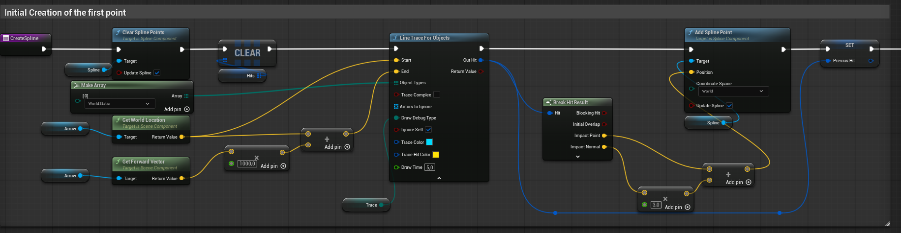
Then we cast a line forward from the actor, the red arrow in this case. We use the hit point to spawn a spline point slightly above the impact point.
We store this point for later in Previus Hit.
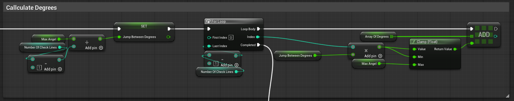
This will be reused a lot so instead of recreating the same math each time we want to check for points we just do it once and add it to an array called Array of Degrees
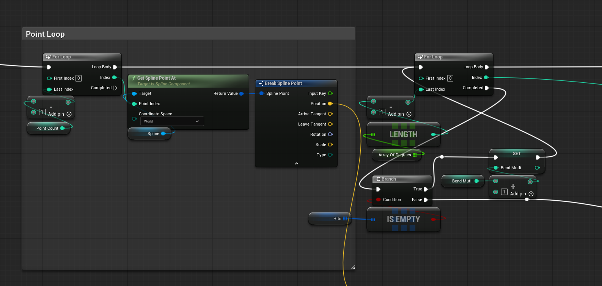
We use the index from the loop to get the spline point, this will always be the lates spline point made. In this case the one we just made nummber 0.
We have to use its postion for later so lets call that IndexPos for simplisty of reading.
the loop after looks odd but ill explain it, this is where we fire out in a cake slice of degrees to check where we can place a point.
The stuff bellow it is just a check to see if we hit something or not if we didnt we try again but with a little difference.
For now just remeber Bend Mutli.
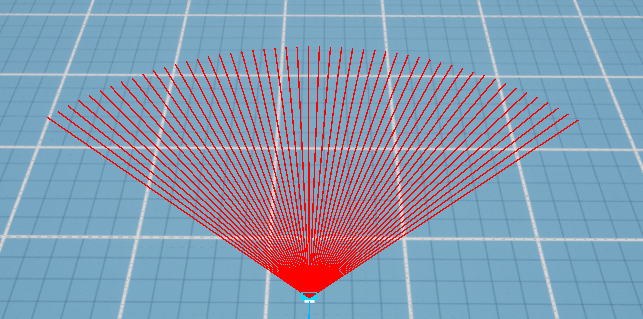
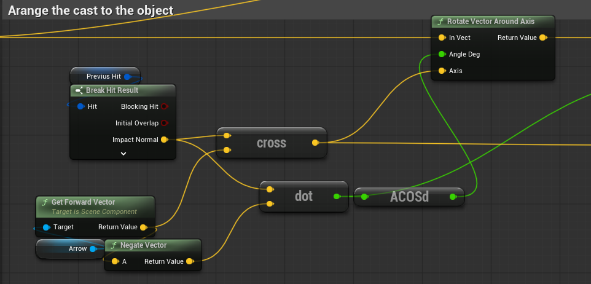
We do this by taking the Previus Hit impact normal and corssing it with the forward vector of the arrow, this create a right vector for use to roate around.
We calcualte how much we need to roate by taking the impact normal and a negated forward of the arrow and doting them, take this dot prodoct and put it into ACOSd which returns us the degrees we need to rotate by.
This does have a problem tho if the dot prodoct is near or equal to 1 then the calcualtions we are going to do after all break so we need this branch statement (if) to just make sure we use a different math if this is true.
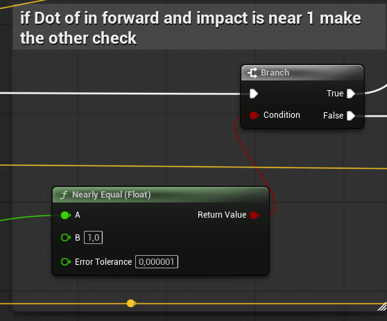
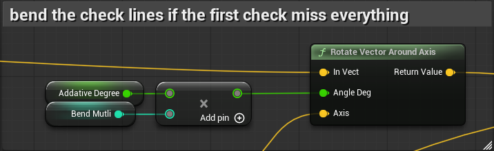
We do this by using the eariler cross product. Then bend multi only goes up if we fail to hit anything so here we shit the rays over and over and over until we have a cake slice that is a hit slice.
after this we actually fire the ray and if they hit something we add it to an array of hits.
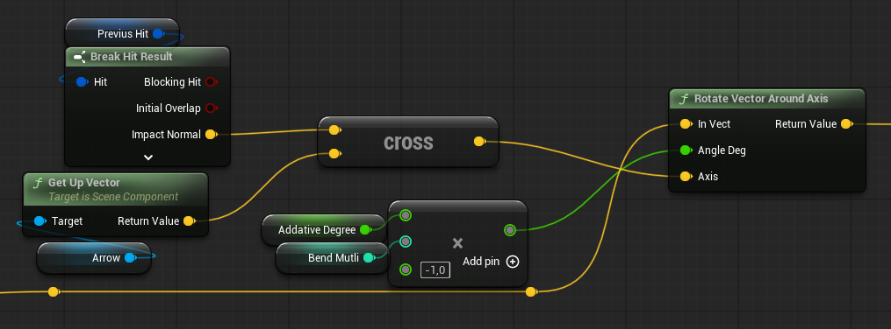
This rotates the fire around right vector relative to the impact
See the dot being equall to 1 means that the impact normal and the forawrd of the actor is the same and that breaks things when we cross them.
So we instead use the up vector and the impact normal crossing them to create a right vector.
We use this right vector to rotate the lines instead making the shake fallow the object like this.
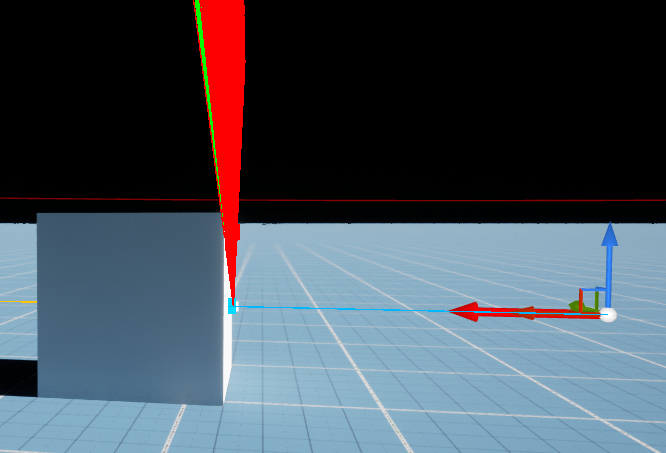
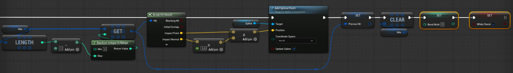